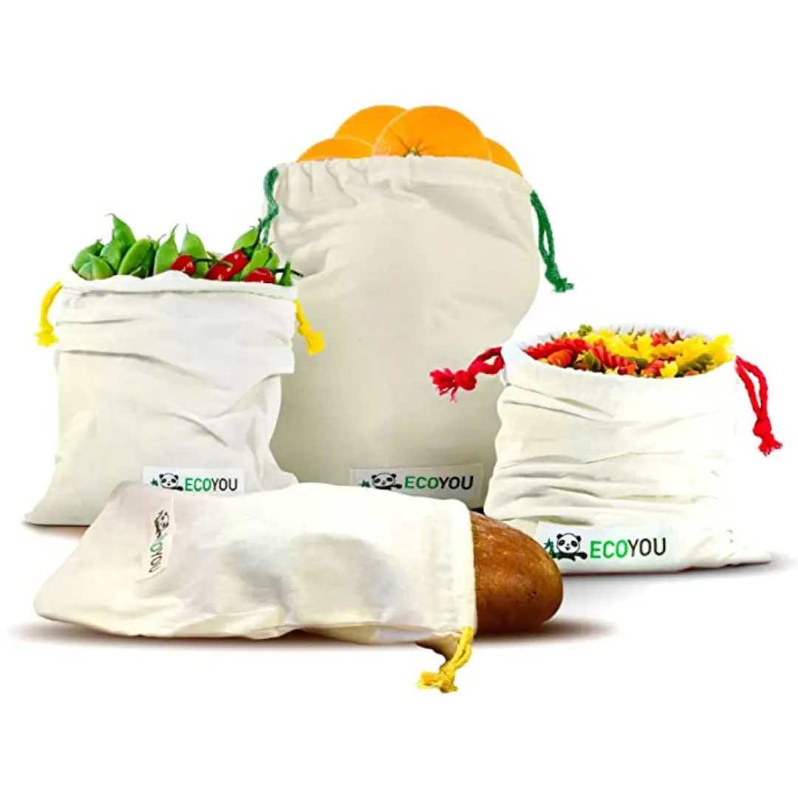

Industria del Plástico
La contaminación del plástico se entiende como la acumulación de residuos no peligrosos fabricados con plástico, actividad que afecta negativamente a la fauna, flora y a los humanos. Además, este tipo de contaminación puede producirse en los océanos, mares, ciudades, campos, zonas rurales o cualquier otro tipo de ambiente.
A lo largo de nuestro día utilizamos gran cantidad de productos que están envasados en plástico: nuestra pasta de dientes, desodorante, ciertos envases de alimentos, entre muchos otros. Cada uno de estos artículos acaba en el medioambiente si no los reciclamos adecuadamente e incluso, en ciertas ocasiones, aunque los reciclemos correctamente, no son tratados de la forma adecuada. Debido a la enorme cantidad de residuos plásticos que existen en ciertas zonas del mundo, las empresas de tratamiento de residuos no se dan abasto, motivo por el que solo se recicla un porcentaje de estos productos.
La conciencia medioambiental es un tema que se intenta inculcar desde temprana edad, sin embargo, aún queda mucho por hacer. Como ya mencionamos, no toda la culpa de la contaminación del plástico recae en los ciudadanos, pero nuestro compromiso parte desde nuestros hogares y nuestro comportamiento, motivo por el que resulta tan necesario ejercer de personas responsables y cuidadosas con el entorno que nos rodea.

Como sucede con gran parte de los tipos de contaminación, la contaminación del plástico también genera un incremento en las emisiones de CO2, lo que a su vez produce daños sobre los ecosistemas y la biodiversidad, así como también mayor emisión de gases de efecto invernadero y, por supuesto, empeora la situación del calentamiento global.
¡Más datos!
Emisiones
La industria del plástico contribuye entre un 30 y 40 % a las emisiones de gases de efecto invernadero, por lo que supone “un obstáculo para cumplir el Acuerdo de París en el contexto de emergencia climática actual”, según un informe presentado este miércoles.
Microplasticos
Los microplásticos se utilizan “intencionadamente” en productos tan variados como fertilizantes, fitosanitarios, cosméticos, detergentes, productos de limpieza y pinturas.
Un 80 por ciento de la contaminación provocada por microplásticos presente en el océano proviene de la superficie terrestre, donde este problema podría ser hasta 23 veces mayor que en el entorno acuático.
Perdida de biodiversidad
La contaminación ambiental es un problema tan grave que incluso acaba con la vida de ciertos animales. En este caso, la contaminación por plásticos no es la excepción.
La contaminación de plásticos en el mar puede generar el enredo de ciertas especies en residuos plásticos, como las anillas de algunas bebidas, o la ingesta de elementos que afecten la vida de los animales marinos. Es por este motivo que entre las consecuencias de la contaminación del océano por plásticos destacamos la pérdida de fauna.
Problema de salud
Los niveles de contaminación plástica también afectan a nuestra salud, ya que, si los ecosistemas se contaminan, están expuestos a elementos químicos que pueden llegar a nuestro organismo a través de la cadena alimenticia.
Reducción de consumo
Compra a granel. Apuesta por los bioplásticos. No utilices pajitas ni vasos plásticos. Usa botellas de agua reutilizables o termos. Abandona el uso de bolsas de plástico, opta por las bolsas de tela. Cuando hagas la compra, llévate a casa productos que estén envasados en vidrio. Reutiliza los envases de vidrio cuando acabes su contenido. Reutiliza las botellas plásticas para almacenar bebidas o crear manualidades, como juguetes para niños con botellas de plástico recicladas.
